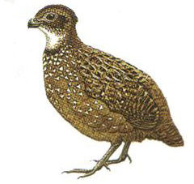

Odontophorus columbianus
| Perdiz Montañera | |
|---|---|
|  | |
| Riesgo de extinción | |
 Casi amenazado (UICN) | |
| Clasificación científica | |
| Reino: | Animalia |
| Filo: | Chordata |
| Clase: | Aves |
| Orden: | Galliformes |
| Familia: | Odontophoridae |
| Género: | Odontophorus |
| Especie: | Odontophorus columbianus |
| Nombre binomial | |
|
Odontophorus columbianus Gould, 1850 | |
| Distribución | |
 Mapa de distribución de Odontophorus columbianus | |
Contenido
Taxonomía
Nombres comunes
Perdiz Montañera, Venezuelan Wood-Quail
Notas taxonómicas
Especie monotipica, sin subspecies reconocidas (Restall, 2006).
Sinónimos
Descripción
Perdiz de entre 25-28 cm de longitud y alcanzando los 315g. de peso. Corona y nuca color marrón rojizo oscuro, parte superior marrón rufo con una complicada combinación de puntos negros y blancos con estrías marrones, garganta blanca, mejillas y área subocular negras, parte inferior parda con manchas blancas; cola muy corta y patas poderosas. La hembra es muy similar al macho pero la parte inferior es más grisácea (Hilty, 2003).
Esta ave totalmente terrestre habita bosques nublados principalmente. Poca información existe sobre la biología y conservación de esta especie, aunque se acepta que son especies monógamas y que forman grupos de tamaño variable, al igual que otros miembros del género (Bonaccorso, 1999). En general parece preferir zonas con vegetación muy densa, lo que dificulta su observación (Más escuchada que vista).
A la hora de alimentarse parece preferir áreas con una gran densidad de monocotiledóneas, vegetación vertical con follaje muy denso y poca densidad de palmas del género Bactris (Bonaccorso y Barreto, 2002).
Distribución
Especie endémica de la Cordillera de la costa Venezolana y unas pocas localidades del sur de Táchira, registrada entre 900- 2400 m.s.n.m. Sur de Táchira (Avistamientos en Río Chiquito), Cordillera de la Costa desde Carabobo hasta el norte de Miranda. Probablemente se encuentre en el norte de Santander en Colombia (Hilty, 2003).
Situación
'Lista Roja Venezuela' Casi Amenazado
'Lista Roja internacional' Casi Amenazado
Esta especie califica como Casi Amenazada debido que se encuentra solo en una pequeña extensión de territorio, el cual se reduce cada vez más por pérdida de hábitat y cacería excesiva. Un análisis más completo sobre las localidades donde ciertamente se encuentra, podría llevar a la consideración de su ascenso a la categoría de Vulnerable. En cuanto al número poblacional, existe poca información pero se estima por debajo de los 10.000 individuos (Birdlife.org).
Amenazas
Aún existen extensas áreas de bosque dentro de su rango de distribución en la Cordillera de la Costa, pero en algunos lugares como las adyacencias de Caracas y otras áreas presentan una degradación intensa. En Táchira existen zonas no perturbadas de bosque que actualmente se ven amenazadas por el avance de cultivos y zonas de pastoreo. La cacería sin control también resulta una amenaza importante para esta especie (Birdlife.org).
Conservación
Actualmente no existe ninguna medida de conservación para esta especie, en gran parte debido a lo poco se sabe sobre su biología. Sin embargo gran parte de su distribución se encuentra protegida por los Parques Nacionales El Tama, San Esteban, Henri Pittier, Macarao, El Ávila y el Monumento Natural Pico Codazzi.
Trabajos como el de Bonaccorso en 2002, permiten identificar características del hábitat relacionadas con la alimentación de esta especie, lo que provee de una herramienta útil a la hora de identificar lugares adecuados a la hora de algún intento de reintroducción o de proteger con mayor énfasis dichas áreas donde la especie sigue presente.
Editores y Colaboradores
Iván Lau
Referencias
Hilty, S. 2003.Birds of Venezuela.SecondEdition. Princeton Univesity Press.
Restall, R. 2006. Birds of Northern South America. Yale University Press.
BirdLife International (2013) Species factsheet: Odontophorus columbianus. Consultado el 12/09/13
Bonaccorso,E. Lentino,M., Barreto,G. 1999.Habitat Preferences of the Venezuelan Wood-Quail (Odontophorus columbianus). Conservación of Quail: VI Neotropical Ornithological Congress. Monterrey, Mexico
Bonaccorso, E.; Barreto, G. R. 2002. Microhabitat use by foraging Venezuelan Wood-Quails (Odontophorus columbianus). Journal of Field Ornithology 73: 318-322.